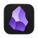

Eagle 素材、截图、网页快照 未生成 Eagle 保存形式 当前可见截图 页面首图 / Open Graph 图片 网页 URL 书签 网页 HTML 快照 展开后自动生成预览。 待收录素材 生成后可勾选 展开后展示可收录的视频、截图、快照和链接。 展开后生成预览
 Obsidian Web Clipper 风格 Markdown 未生成 Obsidian 模式 auto journal thought clip 展开后自动生成预览。 展开后生成预览